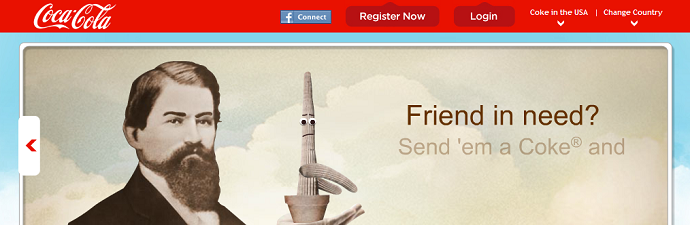
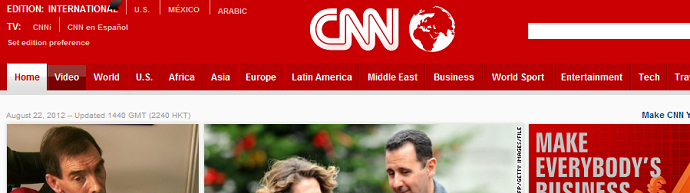
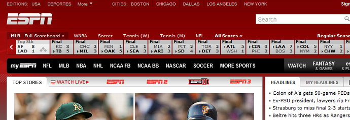
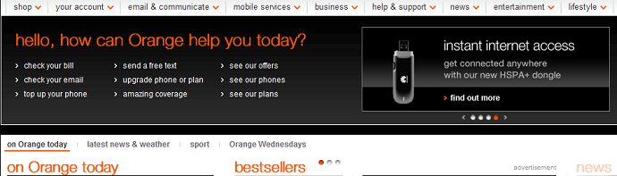
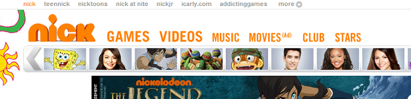
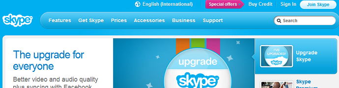
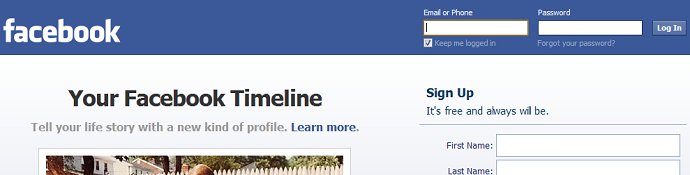
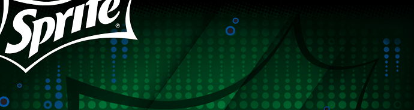
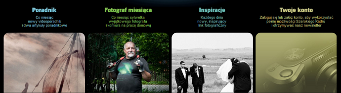
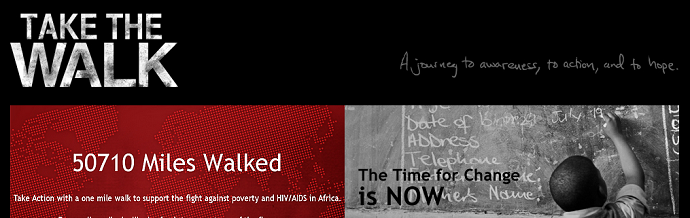

Color Symbolism in Web Design
by Corina Ciripitca
Colors influence web design - whether it's about cultural beliefs, instincts or simply visual interpretation.
Colors play an influential role in visual design and they should be taken into consideration once you plan the design of a website or an application. These have a psychological impact on people, hence the designer can play along in creating a certain effect or send a certain message. Based on the color the designer picks, and the way he mixes it with other colors decide the emotions visitors are going to have towards the overall image.
About Colors
The color spectrum has three main color groups:
- warm: red, yellow, orange. These are colors that create a warm atmosphere. They can be also associated with passion or aggressiveness and one has to be careful while using them for their designs. They might send a powerful message depending on the combination they are used in.
- cool: blue, green, purple. Often associated with trust and professionalism, these colors are used to create a calmer atmosphere. Sometimes might create a sense of sadness or melancholy
- neutral: grey, brown, colors that don't create many emotions. Grey usually doesn't create a lot of positive nor negative feelings. It's a neutral color and is great for creating a non-invasive atmosphere. It can be used to create a balance between warm and cool colors. Brown is the color of the earth. It usually creates a solid and wholesome feeling.
Blending Colors in Web Design
Red
Red brings on tons of energy to a design, especially on the web. It also produces lots of excitement, which makes the user want to see it closely. Brighter versions of red get the energy up, while darker shades are powerful and elegant.
Coca Cola has used the red color on their label forever. They also chose to include it in their website, probably accentuating passion and excitement over a popular brand.
 Orange
Orange is also a strong color, that is believed to increase the appetite, but also creates a positive allure when used correctly. It is also associated with the warmth of the sun, in comparison with bright read and can be used in elements to point out some important blocks of information, or in the background to convey certain feelings.
 Blue
Blue usually conveys a feeling of calm and serenity. It is also associated with importance and professionalism, hence many companies try to use it in order to gain more trust for their products and services. It is believed that blue is one of the least disliked colors by all cultures in the world, being popular between males and females alike.
 Green
Green is a symbol of nature, hence being used a lot lately in web design in order to emphasize natural products, organic foods, environmental awareness, etc. However this is not the main reason green is used in web design. It is a comfortable color, great to point out something without pushing the user for action.
Black
Black is the definition of seriousness, professionalism and authority. In web design it is widely used lately, to create a darker allure. It goes great for websites to represent photos, this is why most photography websites either have a dark design, or have a "See this on black" version that makes all the elements from the picture more visible. Although dark is widely chosen in webdesign to convey style and mystery in some cases, it might look depressive when used to much. It is also believed to decrease readability when used inappropriately with fonts and styles.
 